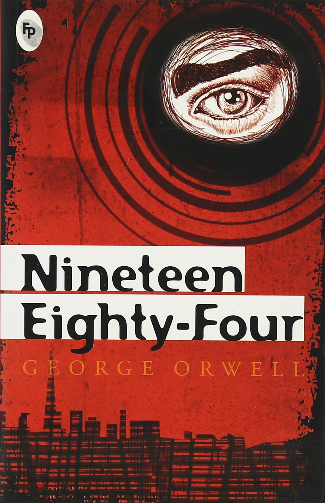

Author : George Orwell
Genre : Science Fiction
Best price : €6.99*
Buy at: Book Depository

Nineteen Eighty-Four
Renowned urban artist Shepard Fairey's new look for Orwell's classic dystopian tale
One of Britain's most popular novels, George Orwell's Nineteen Eighty-Four is set in a society terrorised by a totalitarian ideology propagated by The Party.
Winston Smith works for the Ministry of Truth in London, chief city of Airstrip One. Big Brother stares out from every poster, the Thought Police uncover every act of betrayal. When Winston finds love with Julia, he discovers that life does not have to be dull and deadening, and awakens to new possibilities. Despite the police helicopters that hover and circle overhead, Winston and Julia begin to question the Party; they are drawn towards conspiracy. Yet Big Brother will not tolerate dissent - even in the mind. For those with original thoughts they invented Room 101. . .
Nineteen Eighty-Four is George Orwell's terrifying vision of a totalitarian future in which everything and everyone is slave to a tyrannical regime. The novel also coined many new words and phrases which regular appear in popular culture, such as 'Big Brother', 'thoughtcrime', 'doublethink' and 'Newspeak'.
Specifications:
Publisher: Penguin Books Ltd
ISBN: 9780141036144
Number of pages: 336
Weight: 180 g
Dimensions: 110 x 178 x 30mm
>>Reviews
Though all “thinking people,” as they are still sometimes called, must by now have more than a vague idea of the dangers which mankind runs from modern techniques, George Orwell, like Aldous Huxley, feels that the more precise we are in our apprehensions the better. Huxley’s “Ape and Essence” was in the main a warning of the biological evils the split atom may have in store for us; Orwell’s Nineteen Eighty-Four speaks of the psychological breaking-in process to which an up-to-date dictatorship can subject non-cooperators.
The story is brilliantly constructed and told. Winston Smith, of the Party (but not the Inner Party) kicks against the pricks, with what results we shall leave readers to find out for themselves. It has become a dreadful occasion of anguish to-day conjecturing how much torture even a saint can put up with if the end is certainly not to be a spectacular martyrdom - but “vaporisation.” The less you are familiar with the idea of the agent provocateur as an instrument of oppression and rule the more you will shudder at the wiles used by the Ministry of Love in Mr. Orwell’s London of 1984, “chief city of Airstrip One, Oceana.” An example of the way things are managed: Emmanuel Goldstein, the proscribed Opposition leader, is a fiction artfully sustained by the authorities to lure deviationists into giving themselves away.
It is an instructive book; there is a good deal of What Every Young Person Ought to Know - not in 1984, but 1949. Mr Orwell’s analysis of the lust for power is one of the less satisfactory contributions to our enlightenment, and he also leaves us in doubt as to how much he means by poor Smith’s “faith” in the people (or “proles”). Smith is rather let down by the 1984 Common Man, and yet there is some insinuation that common humanity remains to be extinguished.